En una línea: una tablet en la entrada y una tarjeta por empleado. Cada uno pasa su tarjeta al entrar, al salir a comer, al volver y al irse. El sistema registra la hora del servidor (no se puede adelantar ni atrasar), saca una foto en ese momento y arma solo el resumen del mes: faltas, llegadas tarde, horas, horas extra y certificados. El sistema ya está hecho y probado en el sistema de pruebas (cómo se usa cada pantalla en el punto 3; qué se probó y qué no, en el punto 4); lo que falta es comprar el equipo y que los dueños definan sus reglas. Lo que figura en rojo es estimado o ejemplo.
1. Qué problema resuelve
Hoy, sin control
- No hay registro firme de a qué hora entra y sale cada uno.
- Las llegadas tarde y las faltas se recuerdan «de memoria».
- Las horas extra se pagan por lo que se dice, no por lo que se registra.
- Los certificados llegan por WhatsApp y se pierden.
- Si hay un reclamo o un juicio por horas extra, la empresa no tiene planillas para mostrar.
Con el sistema
- Cada marca con hora del servidor y foto: nadie marca por otro.
- Al abrir el sistema aparece quién falta y quién llegó tarde.
- Resumen del mes automático por empleado, en pantalla (todavía no se imprime ni pasa solo a sueldos).
- Horas extra calculadas con las reglas de la empresa y aprobadas por la oficina.
- Certificados con foto, aprobados o rechazados, con historial.
- Registro guardado y ordenado, que sirve como respaldo ante un reclamo.
Por qué conviene tenerlo (no solo para controlar): en un juicio por horas extra, si el empleador no muestra los registros de horario, la justicia suele darle la razón al trabajador. La reforma laboral de 2026 creó el banco de horas, que exige un registro confiable de lo trabajado. Y el premio por asistencia del convenio del caucho se calcula por faltas y llegadas tarde: sin registro, no hay forma justa de liquidarlo.
2. Cómo funciona, paso a paso
1
Tarjeta personal. Cada empleado recibe una tarjeta con su nombre y un código QR (se imprime desde el sistema). Si la pierde, la oficina hace una nueva y la vieja deja de andar.
2
Marca en la entrada. Pasa la tarjeta por la tablet. El sistema decide solo si es entrada o salida, le muestra un cartel grande («Buen día, Pedro · ENTRADA 07:28») y saca una foto. Si la pasa dos veces seguidas, no la cuenta de nuevo.
3
Almuerzo. La pasa al salir a comer («volvé a las 13:30») y al volver («almuerzo de 58 min»). Si se pasa del tiempo, queda anotado.
4
Certificado o aviso. En la misma tablet toca «Presentar certificado», pasa su tarjeta y saca una foto del papel. Llega a la oficina como pendiente. También se puede cargar desde la oficina si llegó por WhatsApp.
5
Oficina. Ve quién falta hoy, aprueba certificados y horas extra, corrige con motivo si alguien no pudo marcar (queda quién lo hizo) y ve el resumen del mes por empleado.
6
Reglas de la empresa. Horario, tolerancia, sábado, almuerzo, cómo se cuentan las horas extra, premios y sanciones sugeridas: todo se cambia en pantalla, sin tocar el sistema.
3. Cómo se usa, pantalla por pantalla
Capturas reales del sistema de pruebas del 26/10/2026, con empleados de prueba. El recuadro naranja marca dónde se toca. Arriba de cada pantalla dice si está probada. Son tres partes: A. lo que se carga una sola vez al empezar, B. lo que hace cada empleado todos los días en la tablet de la entrada y C. lo que hace la oficina.
A. Puesta en marcha (se hace una sola vez, en la oficina)
A1 · Lista de empleados Probado
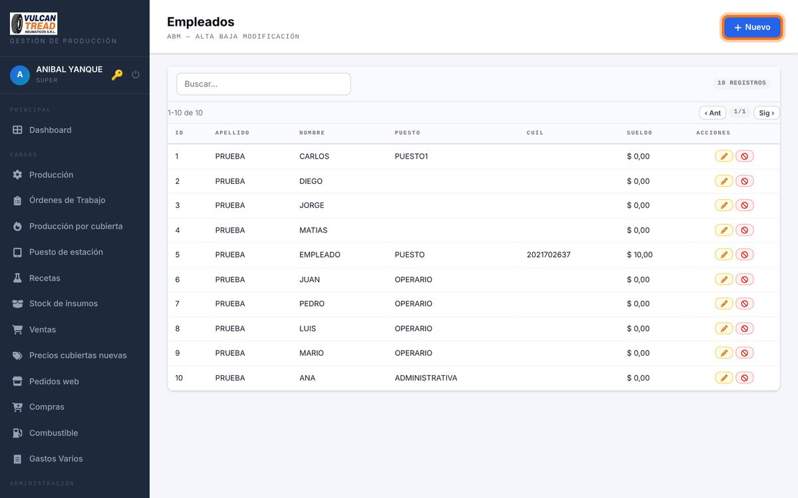
Dónde: Menú › Maestros › EmpleadosQuién: Oficina (administrador)
- Muestra todos los empleados con apellido, nombre, puesto, CUIL y sueldo.
- + Nuevo abre el formulario para dar de alta un empleado.
- En cada fila: el lápiz modifica los datos; el botón rojo da de baja.
Para la empresa: es la misma lista de empleados del sistema: no hay que cargarlos dos veces para asistencia.
A2 · Alta de un empleado Probado
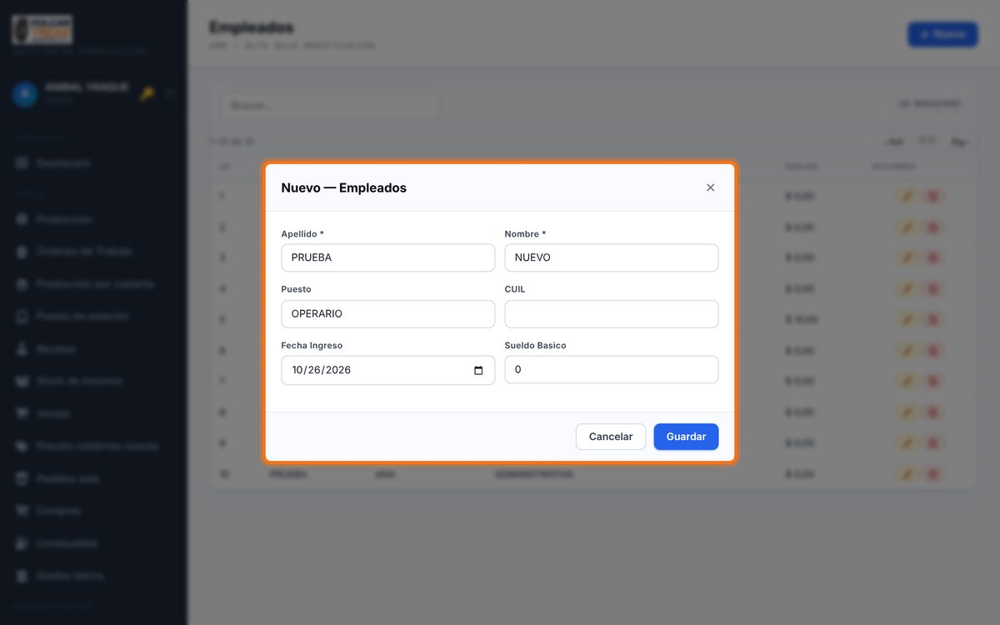
Dónde: Empleados › + NuevoQuién: Oficina
- Apellido y nombre (obligatorios), puesto, CUIL, fecha de ingreso y sueldo básico.
- Fecha de ingreso: desde ese día el sistema le cuenta la asistencia. Los días anteriores no figuran como faltas.
- Guardar lo deja dado de alta.
Para la empresa: cuando entra alguien nuevo, en un minuto queda cargado y listo para su tarjeta.
A3 · Empleado guardado, cambios y bajas Probado (alta y modificación) · Baja no probada con la tablet
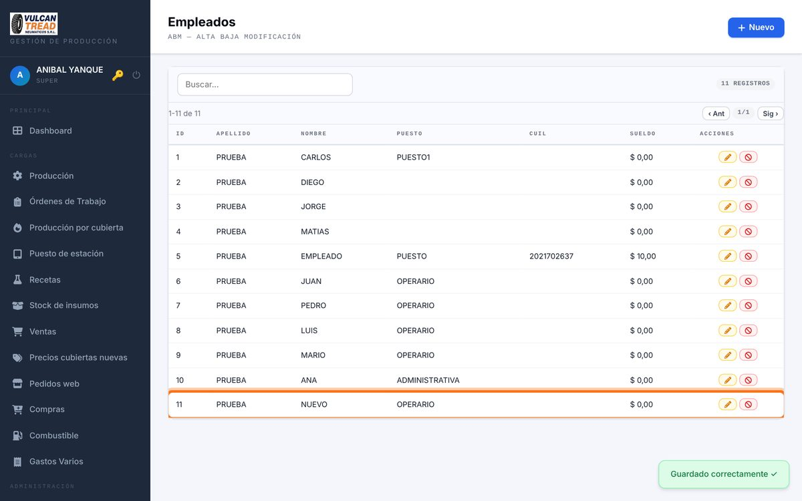
Dónde: EmpleadosQuién: Oficina
- El empleado nuevo aparece en la lista (acá PRUEBA NUEVO).
- Modificar: el lápiz abre sus datos para cambiarlos.
- Baja: el botón rojo lo deja inactivo. Desaparece de asistencia y su tarjeta deja de andar en la tablet («El empleado de esa tarjeta no está activo»). Su historial no se borra.
Para la empresa: altas, bajas y cambios en un solo lugar, sin borrar nunca la historia de nadie.
A4 · Reglas: horario Probado
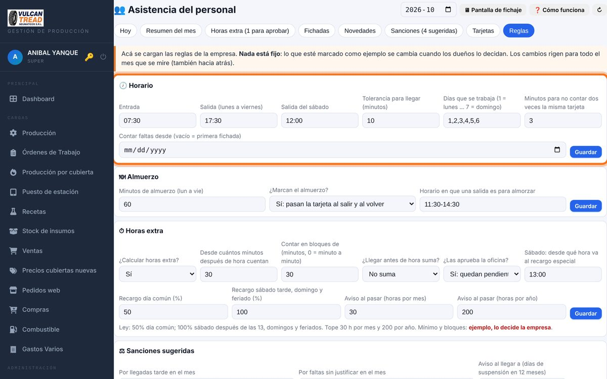
Dónde: Menú › Administración › Asistencia › pestaña ReglasQuién: Oficina (solo administrador puede cambiarlas)
- Hora de entrada, salida de lunes a viernes y salida del sábado.
- Tolerancia: minutos que se aceptan antes de contar llegada tarde (hoy 10).
- Días que se trabaja (1 = lunes … 6 = sábado).
- Minutos para no contar dos veces la misma tarjeta.
- Desde qué día se cuentan las faltas.
- Cada bloque tiene su botón Guardar. Si un valor está mal escrito, no lo guarda y avisa.
Para la empresa: las reglas son las de la empresa y se cambian en pantalla cuando los dueños decidan, sin tocar el sistema.
A5 · Reglas: almuerzo Probado
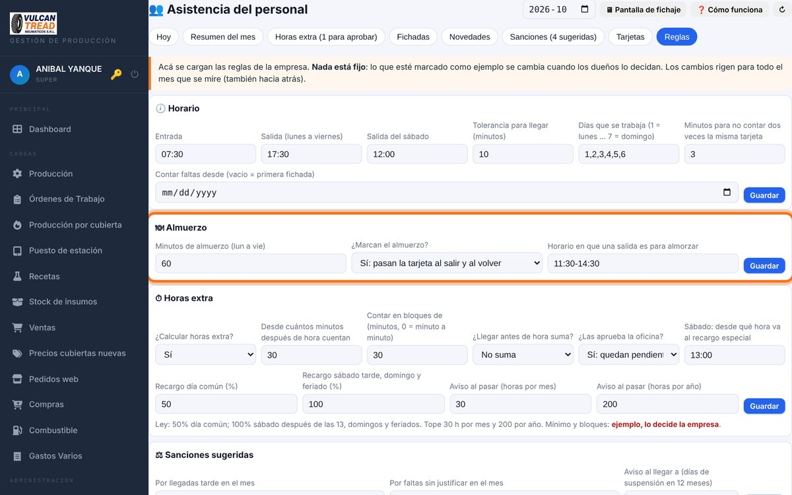
Dónde: Asistencia › ReglasQuién: Oficina
- Minutos de almuerzo (hoy 60).
- Si marcan o no el almuerzo. Si marcan: pasan la tarjeta al salir y al volver. Si no: se descuenta solo.
- Horario en que una salida cuenta como almuerzo (hoy 11:30 a 14:30).
Para la empresa: se sabe exactamente cuánto tardó cada uno en el almuerzo, todos los días.
A6 · Reglas: horas extra Probado
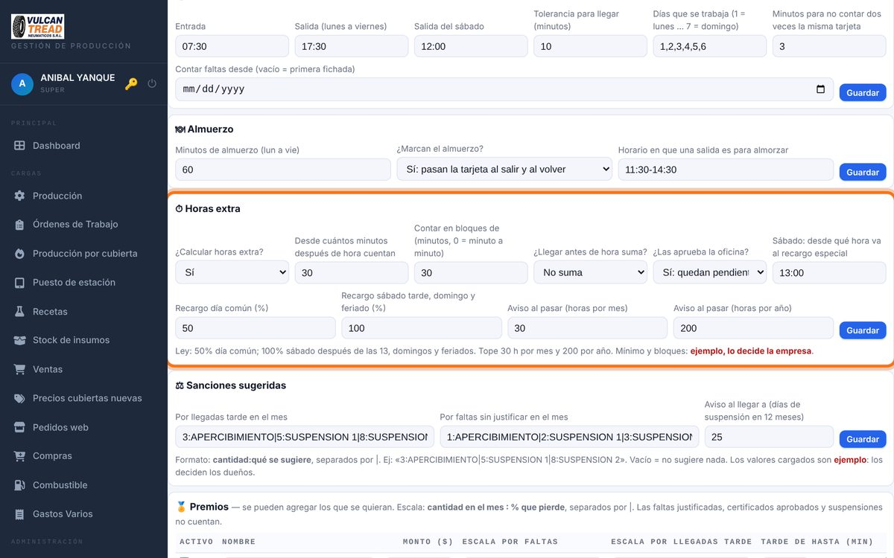
Dónde: Asistencia › ReglasQuién: Oficina
- Si se calculan o no; desde cuántos minutos cuentan; en bloques de cuántos minutos.
- Si llegar antes de hora suma; si las tiene que aprobar la oficina.
- Recargos: 50% día común, 100% sábado después de las 13, domingo y feriado.
- Aviso al pasar el tope de horas por mes y por año.
Para la empresa: las horas extra salen de lo registrado y de las reglas de la empresa, no de lo que cada uno dice.
A7 · Reglas: sanciones sugeridas Probado
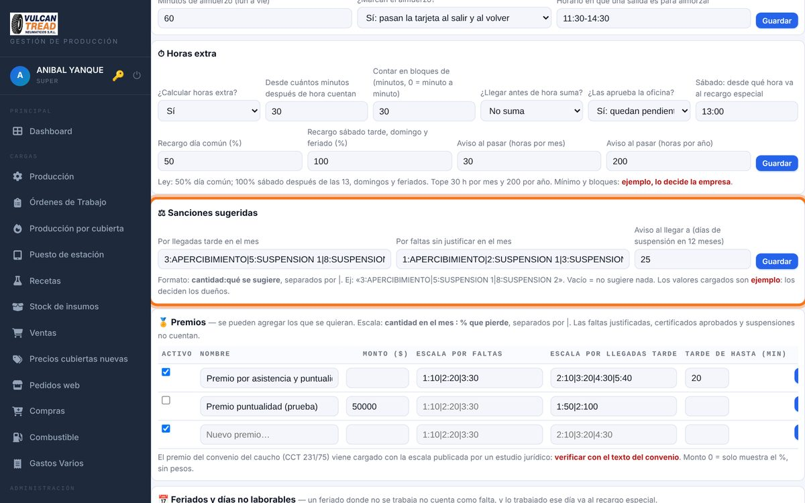
Dónde: Asistencia › ReglasQuién: Oficina
- Qué sanción sugiere el sistema según la cantidad de llegadas tarde o de faltas en el mes. Formato: «cantidad:sanción», por ejemplo «3:APERCIBIMIENTO|5:SUSPENSION 1».
- Aviso cuando alguien se acerca al tope legal de 30 días de suspensión en 12 meses.
- Los valores cargados son ejemplo: los deciden los dueños.
Para la empresa: el sistema avisa; la decisión es siempre de la empresa.
A8 · Reglas: premios Probado
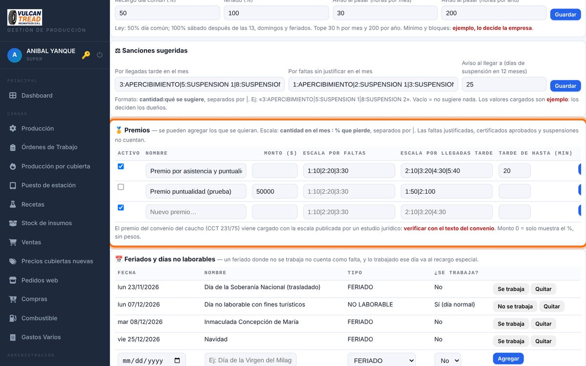
Dónde: Asistencia › ReglasQuién: Oficina
- Se pueden cargar los premios que se quieran: nombre, monto y escala de cuánto se pierde por faltas y por llegadas tarde.
- Viene cargado el premio por asistencia del convenio del caucho, a verificar con el texto del convenio.
- Los certificados aprobados y las suspensiones no hacen perder el premio.
Para la empresa: el premio se liquida con una regla clara e igual para todos.
A9 · Reglas: feriados Probado
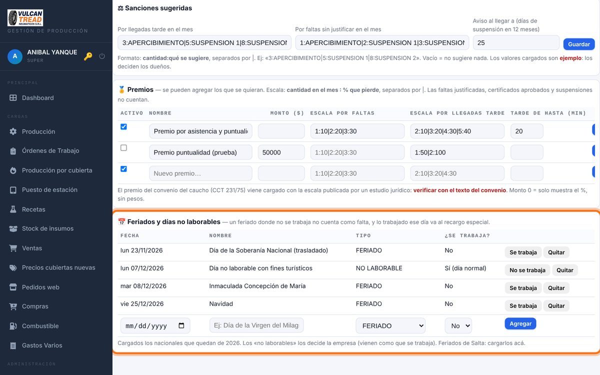
Dónde: Asistencia › ReglasQuién: Oficina
- Lista de feriados y días no laborables, y si ese día se trabaja o no.
- Se agregan los de Salta o los que decida la empresa.
- Un feriado donde no se trabaja no cuenta como falta, y lo trabajado ese día va al recargo especial.
Para la empresa: nadie figura como ausente un feriado por error.
A10 · Tarjetas: crear la tarjeta Probado
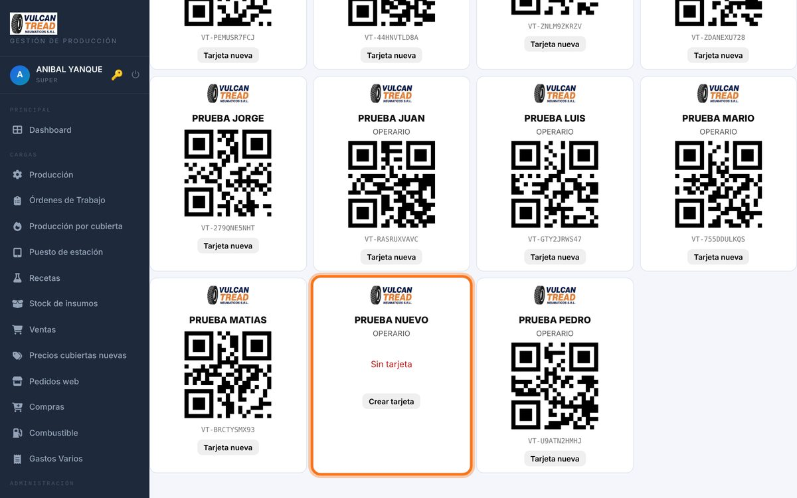
Dónde: Asistencia › pestaña TarjetasQuién: Oficina
- Hay una tarjeta por empleado. El que todavía no tiene dice «Sin tarjeta».
- Crear tarjeta le genera un código único y difícil de copiar (VT-…).
Para la empresa: cada empleado tiene su tarjeta personal; no se puede inventar un código.
A11 · Tarjeta lista Probado
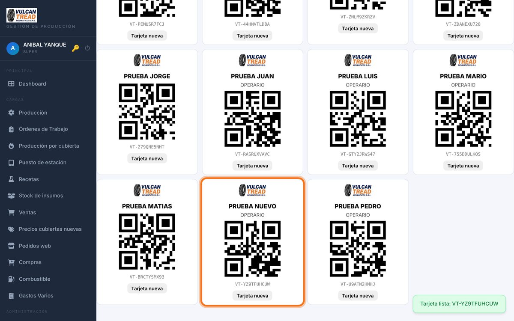
Dónde: Asistencia › TarjetasQuién: Oficina
- Aparece su código QR.
- Tarjeta nueva (tocándolo dos veces) hace otra tarjeta si se pierde: la anterior deja de funcionar al instante.
Para la empresa: una tarjeta perdida o prestada se anula en un segundo.
A12 · Hoja para imprimir las tarjetas Armada, no impresa en papel
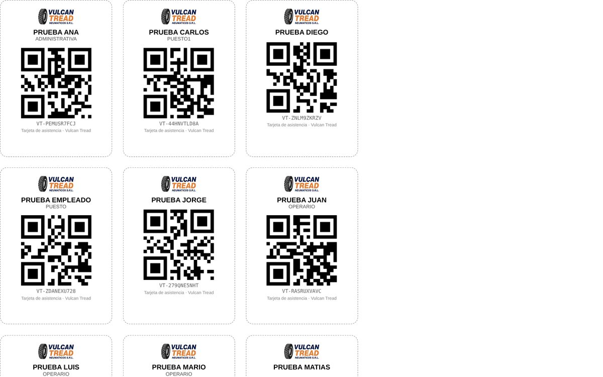
Dónde: Tarjetas › 🖨 Imprimir todas las tarjetasQuién: Oficina
- Arma una hoja A4 con todas las tarjetas, del tamaño de una tarjeta de crédito, con logo, nombre, puesto y QR.
- Se imprimen y se plastifican, o se mandan a hacer en PVC con el mismo diseño.
Para la empresa: no hace falta comprar tarjetas especiales para empezar.
A13 · Aviso y consentimiento por la foto Armada, no impresa
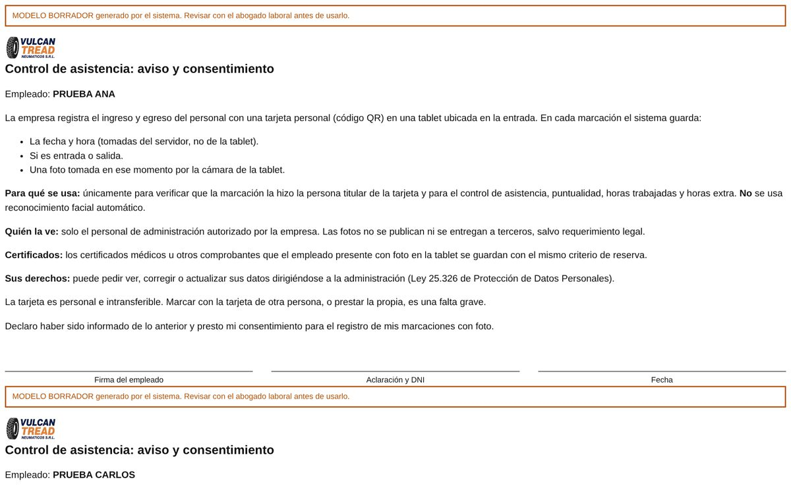
Dónde: Tarjetas › 🖨 Aviso y consentimientoQuién: Oficina
- Una hoja por empleado que explica qué se registra (hora y foto), para qué se usa y quién la ve, y sus derechos (Ley 25.326).
- El empleado la firma antes de empezar.
- Es un modelo: que lo revise el abogado laboral.
Para la empresa: la empresa queda cubierta por el uso de la foto.
A14 · Abrir la pantalla de la tablet No probado en una tablet
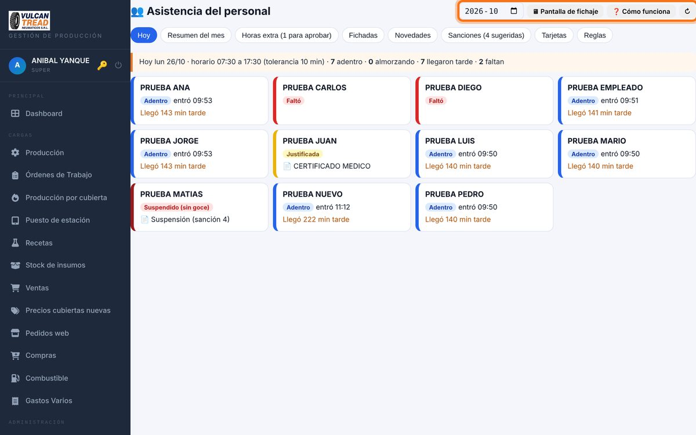
Dónde: Asistencia › botón «🖥 Pantalla de fichaje»Quién: Oficina, una sola vez
- Abre la pantalla de la entrada. En la tablet se entra con un usuario propio y queda abierta en esa pantalla todo el día y toda la noche (la sesión se renueva sola cada 20 minutos).
- En esa pantalla no hay menú: solo se puede marcar y presentar certificados.
Para la empresa: la tablet queda fija en la puerta y no sirve para otra cosa.
B. Todos los días: el empleado en la tablet de la entrada
B1 · Pantalla de espera Cámara no probada · Lector probado (simulado)
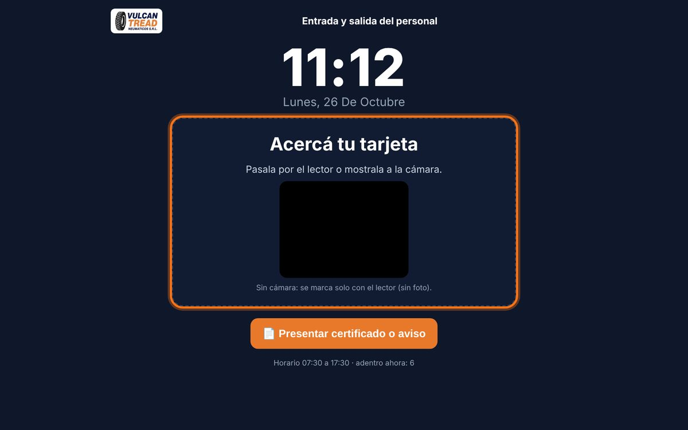
Dónde: Tablet en la entradaQuién: Cada empleado
- Muestra la hora grande y «Acercá tu tarjeta».
- Cómo se marca con la cámara: el empleado pone la tarjeta de frente a la cámara, a 15 o 20 cm, hasta que suena el bip (menos de un segundo).
- Con lector (opción B): la pasa por el lector, como en un supermercado.
- En el cuadro negro se ve la imagen de la cámara. En esta captura está negro porque la computadora de prueba no tiene cámara.
Para la empresa: marcar lleva un segundo; no hay planillas ni firmas.
B2 · Marcó la entrada Probado La foto falta probarla con la cámara de la tablet
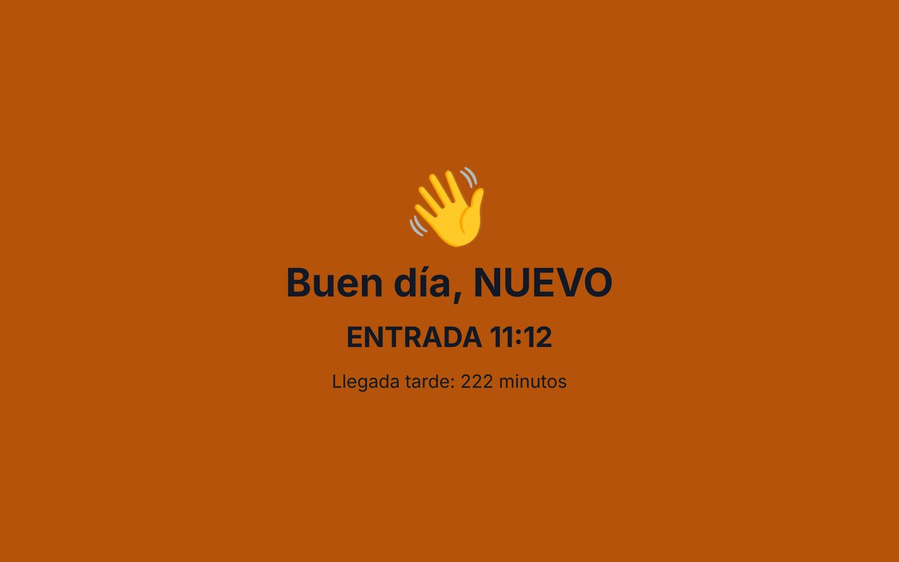
Dónde: TabletQuién: Empleado
- El sistema decide solo si es entrada o salida.
- Muestra «Buen día» con su nombre y la hora, tomada del servidor: la de la tablet no cuenta.
- Verde si llegó a horario. Naranja si llegó tarde, con los minutos (en la prueba: 222 minutos, porque se marcó a las 11:12).
- Saca una foto en ese momento y la guarda con la marca.
Para la empresa: nadie puede marcar por otro (queda la foto) ni cambiar la hora.
B3 · Almuerzo Probado
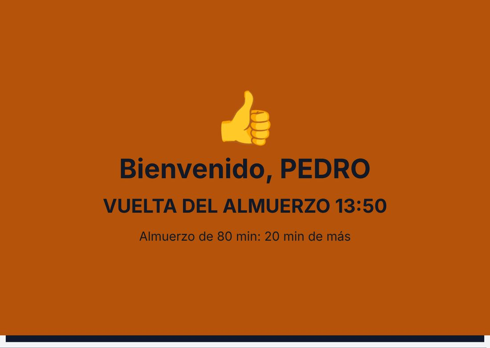
Dónde: TabletQuién: Empleado
- Al salir a comer pasa la tarjeta: «Buen provecho · volvé hasta las …».
- Al volver la pasa de nuevo y ve cuánto tardó. Si se pasó, se lo dice (acá, 20 minutos de más).
Para la empresa: el almuerzo largo deja de ser «de palabra»: queda registrado.
B4 · Pasó la tarjeta dos veces Probado
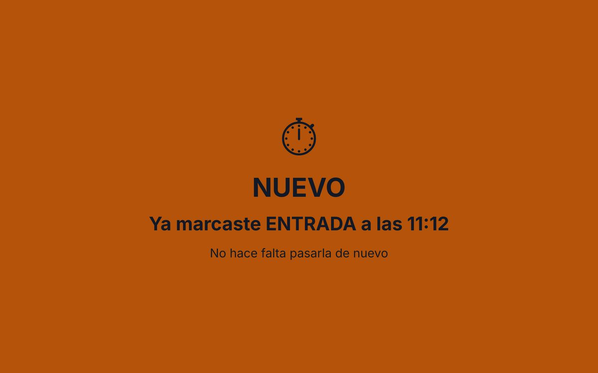
Dónde: TabletQuién: Empleado
- Si la vuelve a pasar enseguida, avisa «Ya marcaste ENTRADA a las …» y no guarda otra marca.
Para la empresa: no se arman marcas falsas por pasarla de más.
B5 · Tarjeta que no sirve Probado
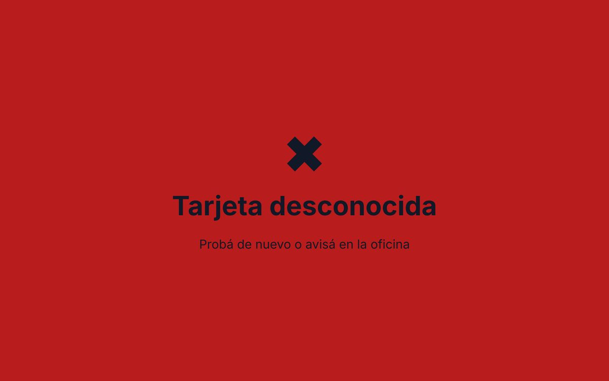
Dónde: TabletQuién: Empleado
- Un código que no es del sistema: «Tarjeta desconocida».
- Una tarjeta reemplazada: «Esa tarjeta está anulada. Pedí una nueva en la oficina».
- Un empleado dado de baja: «El empleado de esa tarjeta no está activo».
Para la empresa: solo marcan las tarjetas vigentes de empleados activos.
B6 · Presentar un certificado: pasar la tarjeta Probado
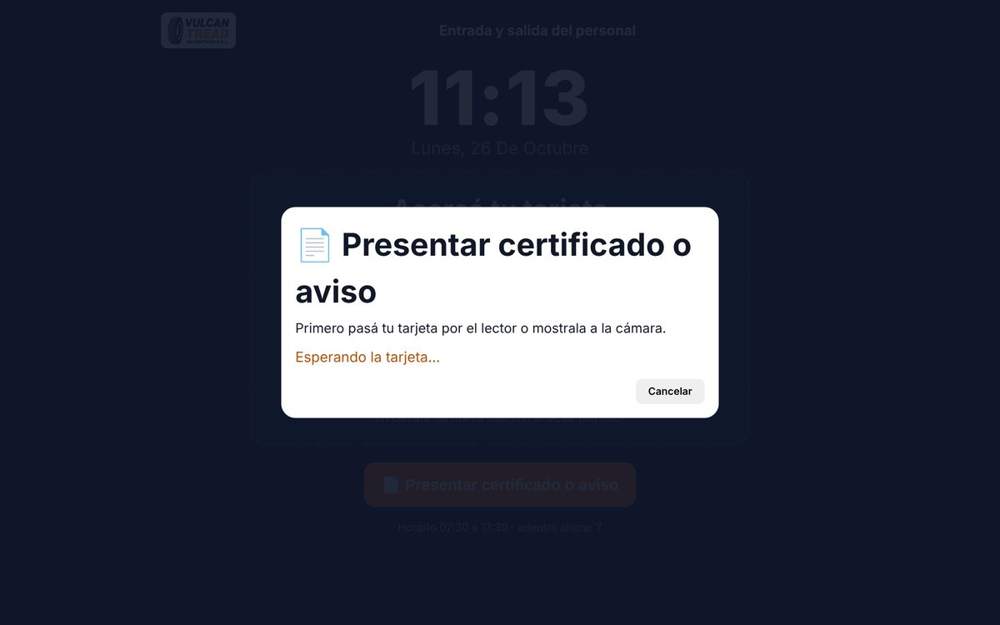
Dónde: Tablet › «📄 Presentar certificado o aviso»Quién: Empleado
- Toca el botón naranja y pasa su tarjeta, así el sistema sabe quién es.
Para la empresa: los certificados entran solos al sistema y no se pierden en un WhatsApp.
B7 · Presentar un certificado: los datos Probado (con foto de prueba)
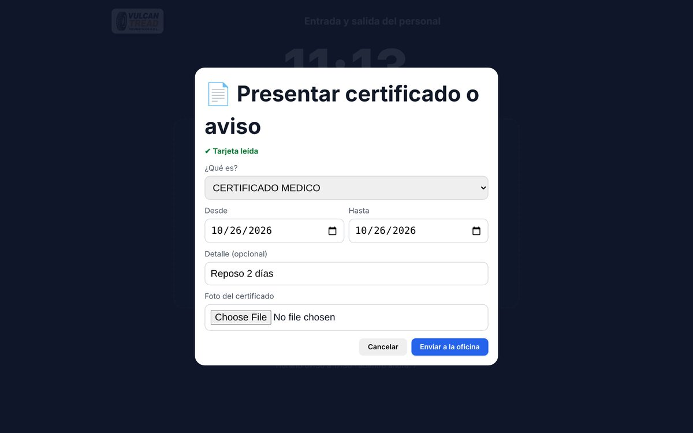
Dónde: TabletQuién: Empleado
- Elige qué es (certificado médico, licencia, vacaciones, permiso, otro), desde y hasta qué día, y un detalle.
- Le saca una foto al papel con la cámara de la tablet. Para un certificado médico la foto es obligatoria.
- Enviar a la oficina: queda pendiente hasta que la oficina lo revise.
Para la empresa: el certificado queda con foto, fecha y quién lo presentó.
C. La oficina
C1 · Aviso al entrar al sistema Probado
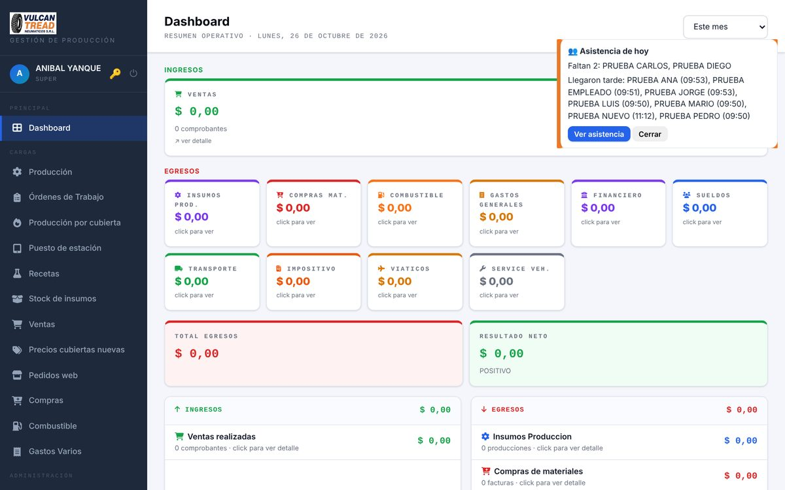
Dónde: Cualquier pantalla, al iniciar sesiónQuién: Administración y dueños
- Apenas se entra al sistema aparece quién falta hoy, quién llegó tarde y cuántos certificados hay para revisar.
- Ver asistencia lleva a la pantalla completa.
Para la empresa: se ve la situación del día sin buscarla.
C2 · Hoy Probado
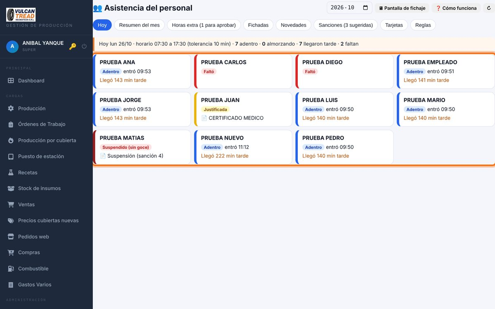
Dónde: Asistencia › HoyQuién: Oficina
- Una tarjeta por empleado, con color: azul adentro, violeta almorzando, rojo faltó, amarillo justificado, bordó suspendido, verde ya se fue.
- Hora de entrada y de salida, minutos de llegada tarde, almuerzo, horas extra y certificado.
- Arriba: cuántos están adentro, almorzando, llegaron tarde y faltan.
Para la empresa: en una mirada se sabe quién está trabajando en la planta.
C3 · Resumen del mes Probado en pantalla
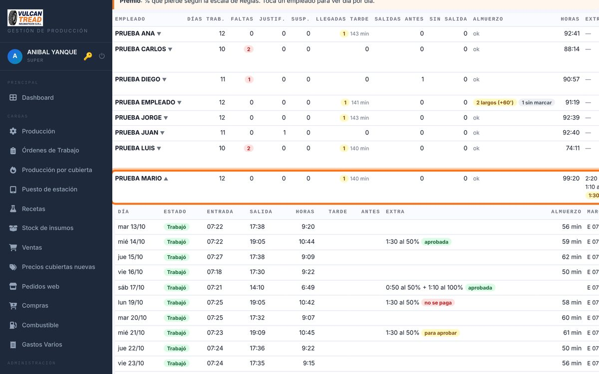
Dónde: Asistencia › Resumen del mesQuién: Oficina y dueños
- Por empleado: días trabajados, faltas, justificadas, suspendido, llegadas tarde (y minutos), salidas antes, días sin marcar la salida, almuerzos, horas trabajadas, horas extra, premio y sanción sugerida.
- Tocando un empleado se abre el detalle día por día: entrada, salida, horas, tarde, extra, almuerzo y todas sus marcas.
- Arriba se elige el mes.
Falta: imprimirlo o pasarlo solo a sueldos. Hoy hay que copiarlo.
Para la empresa: todo lo necesario para liquidar el mes está en una pantalla.
C4 · Horas extra Probado
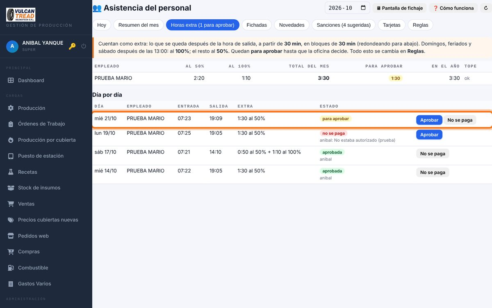
Dónde: Asistencia › Horas extraQuién: Oficina
- Total del mes por empleado al 50% y al 100%, lo pendiente de aprobar, lo del año y aviso si pasa los topes.
- Día por día: Aprobar o No se paga (pide el motivo). Botón para aprobar todas juntas.
Para la empresa: solo se pagan las horas extra que la empresa aprobó.
C5 · Fichadas y correcciones Probado
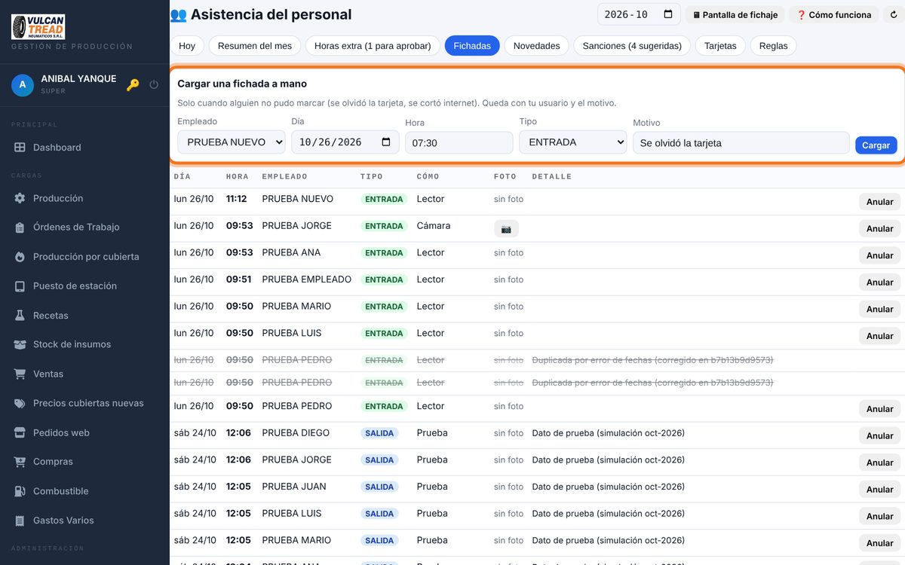
Dónde: Asistencia › FichadasQuién: Oficina
- Todas las marcas del mes: día, hora, empleado, entrada o salida, cómo marcó (lector, cámara o a mano) y la foto.
- Cargar una fichada a mano si alguien no pudo marcar: empleado, día, hora, entrada o salida y motivo. Queda marcada con asterisco y con el usuario que la cargó.
- Anular una marca mal hecha, con motivo.
Para la empresa: toda corrección queda a la vista, con quién la hizo y por qué.
C6 · Novedades: certificados y licencias Probado
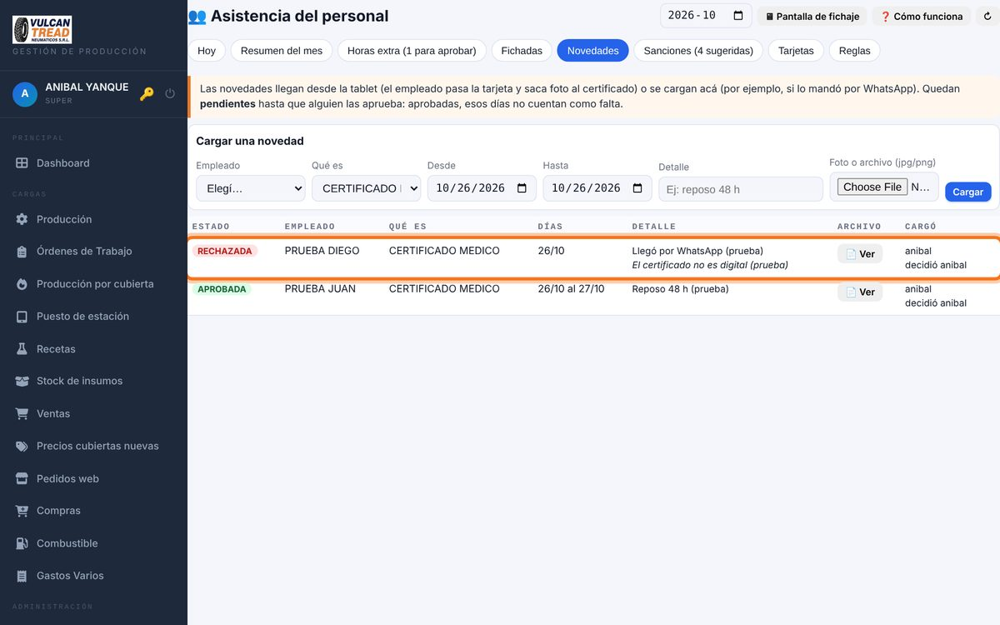
Dónde: Asistencia › NovedadesQuién: Oficina
- Llegan las de la tablet y se pueden cargar acá las que llegaron por WhatsApp, con foto.
- Ver muestra la foto del certificado.
- Aprobar: esos días quedan justificados. Rechazar (con motivo): vuelven a contar como falta.
Para la empresa: cada ausencia queda justificada o no con un papel guardado.
C7 · Sanciones sugeridas y antecedentes Probado
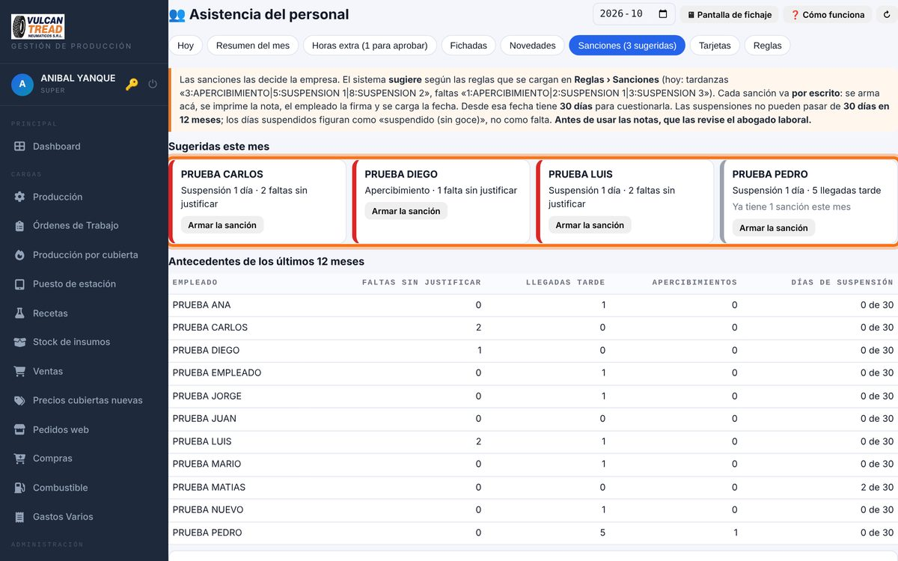
Dónde: Asistencia › SancionesQuién: Oficina y dueños
- Las sanciones que sugiere el sistema este mes según las reglas, y por qué (por ejemplo, «2 faltas sin justificar»).
- Antecedentes de los últimos 12 meses de cada empleado: faltas, llegadas tarde, apercibimientos y días de suspensión.
Para la empresa: una sanción se apoya en registros, no en la memoria.
C8 · Armar la sanción Probado
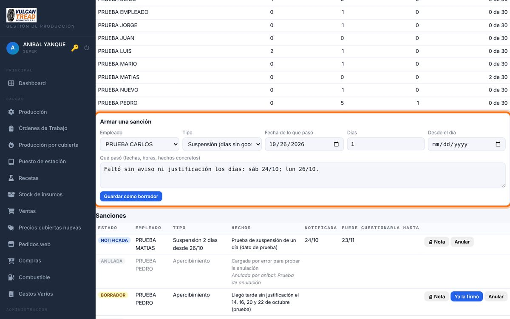
Dónde: Sanciones › «Armar la sanción»Quién: Oficina
- El sistema completa los hechos con las fechas exactas («Faltó sin aviso ni justificación los días…»).
- Se elige apercibimiento o suspensión (días y desde cuándo).
- Guardar como borrador.
Para la empresa: las notas salen con fechas y datos exactos.
C9 · Sanciones: notificar o anular Probado
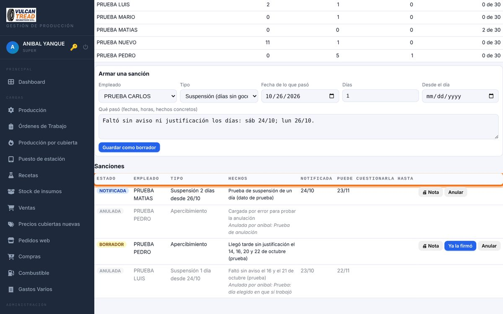
Dónde: SancionesQuién: Oficina
- Nota imprime la notificación para que la firme el empleado.
- Ya la firmó registra el día. Desde ahí corren los 30 días que tiene para cuestionarla.
- Anular, con motivo.
- Los días de suspensión figuran como «suspendido (sin goce)», no como falta, y no le hacen perder el premio.
Para la empresa: cada sanción tiene su nota firmada y su fecha.
C10 · La nota de sanción Probado (sin imprimir)
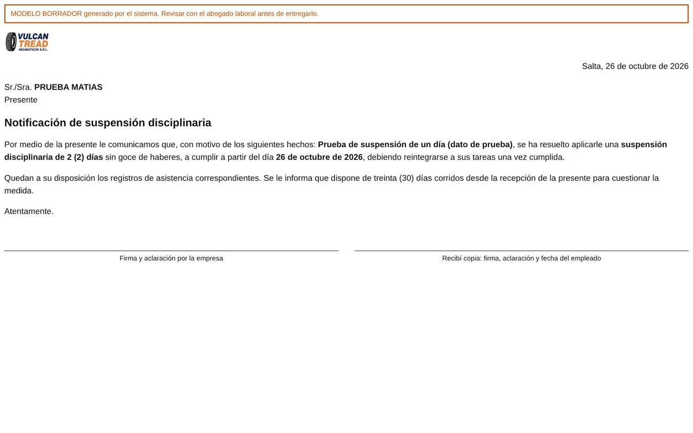
Dónde: Sanciones › NotaQuién: Oficina
- Modelo de notificación con los hechos, la sanción, la fecha y los lugares para firmar.
- Es un borrador: que lo revise el abogado laboral antes de usarlo.
Para la empresa: la nota sale hecha, con los datos correctos.
4. Circuito completo y qué está probado
Todo se probó el 26/10/2026 en el sistema de pruebas, con 10 empleados de prueba y marcas simuladas del 13 al 24 de octubre, desde la computadora. No se probó todavía en una tablet real: la tablet no está comprada.
| # | Quién | Qué pasa | Estado | Cómo se probó |
|---|---|---|---|---|
| 1 | Oficina | Se carga el empleado en Maestros → Empleados y en Asistencia → Tarjetas se genera su tarjeta con un código único (VT-…). | Probado | Tarjetas generadas para los 10 empleados de prueba. El 26/10 se dio de alta un empleado nuevo desde Maestros › Empleados, se le creó la tarjeta y marcó en la tablet. |
| 2 | Oficina | Si una tarjeta se pierde: «Tarjeta nueva». La vieja deja de andar. | Probado | Se pasó la tarjeta vieja en la tablet: respondió «Esa tarjeta está anulada. Pedí una nueva en la oficina.». Un código inventado: «tarjeta desconocida». |
| 3 | Oficina | Imprimir las tarjetas y la hoja de consentimiento de la foto. | Armado, no impreso | Las hojas se arman en pantalla; no se imprimieron en papel. |
| 4 | Oficina | Dejar la tablet abierta en la pantalla de fichaje (link con ?fichaje) con un usuario que solo use esa pantalla. La sesión se renueva sola cada 20 minutos. | No probado | Se probó la pantalla con el usuario administrador. Falta crear el usuario de la tablet y probarla abierta un día y una noche enteros. |
| 5 | Empleado | Pasa la tarjeta: por el lector USB (escribe el código y Enter) o mostrándola a la cámara. | Probado con lector simulado No probado con cámara | El lector se simuló escribiendo el código y Enter, que es exactamente lo que hace un lector USB. La lectura del QR con la cámara no se probó: hace falta la tablet. |
| 6 | Sistema | Decide solo si es entrada o salida, con la hora del servidor, y muestra el cartel grande («ENTRADA 07:28»). | Probado | Entrada, salida, vuelta: alternó bien. La hora es la del servidor, no la de la tablet. |
| 7 | Sistema | Si pasa la tarjeta dos veces seguidas, no la cuenta de nuevo. | Probado | Se pasó la misma tarjeta dos veces seguidas: mostró la marca anterior y no guardó otra. |
| 8 | Sistema | Saca una foto en cada marca y la guarda; la foto solo la ve un usuario con sesión. | Probado el guardado No probado con cámara real | Se guardó y se leyó una foto de prueba; sin sesión el sistema no la entrega. Falta con la cámara de la tablet. |
| 9 | Empleado | Almuerzo: marca al salir y al volver; si se pasa de los 60 min queda anotado. | Probado | Con las marcas simuladas del 13 al 24/10: almuerzos largos y sin marcar aparecen en el resumen. |
| 10 | Empleado | Certificado: en la tablet toca «Presentar certificado», pasa la tarjeta y saca foto del papel. | Probado (foto de prueba) | Llegó a la oficina como pendiente. |
| 11 | Oficina | Pestaña Hoy y aviso al entrar al sistema: quién está, quién llegó tarde, quién falta, quién está con certificado o suspendido. | Probado | Revisado con los datos de prueba del 26/10. |
| 12 | Oficina | Aprobar o rechazar certificados; cargar una novedad que llegó por WhatsApp. | Probado | Un certificado aprobado (cuenta como justificada) y otro rechazado (vuelve a contar como falta). |
| 13 | Oficina | Cargar a mano una marca que faltó (con motivo) o anular una mal hecha. Queda quién lo hizo. | Probado | Marca manual con asterisco en el resumen y anulación con motivo. |
| 14 | Oficina | Feriados: el día no cuenta como falta. | Probado | Feriado cargado: ese día no figuró como falta. |
| 15 | Oficina | Horas extra: se calculan solas (desde 30 min, en bloques de 30; 50% y 100% según el día y la hora) y la oficina las aprueba o no. | Probado | Días con extra al 50%, sábado partido 50%/100%, aprobada, rechazada y pendiente. |
| 16 | Oficina | Sanciones: el sistema sugiere según las reglas; la oficina arma la nota, la imprime, la hace firmar y carga la fecha. | Probado (sin imprimir) | Suspensión notificada: esos días figuran «suspendido», no como falta, y no le quita el premio; el tope de 30 días en 12 meses frena una suspensión que lo pasa. La nota no se imprimió en papel. |
| 17 | Oficina | Premio por asistencia: se pierde un % según faltas y llegadas tarde. | Probado | Premio de prueba cargado y apagado. |
| 18 | Oficina | Resumen del mes por empleado y día por día. | Probado en pantalla | Con 387 marcas simuladas del 13 al 24/10. No se imprime ni pasa solo a sueldos: hoy hay que copiarlo. |
| 19 | Oficina | Reglas: horario, tolerancia, sábado, almuerzo, extras, premios y sanciones se cambian en pantalla. | Probado | Se cambiaron y se probaron valores mal escritos: los rechaza sin tocar el resto. |
Lo que falta probar, en este orden
- Con la tablet comprada: lectura del QR con la cámara, la foto real y el cartel, a la luz de la entrada.
- Crear el usuario de la tablet y dejarla abierta un día y una noche: que a la mañana siga funcionando sin volver a entrar.
- WiFi de la entrada: que la marca llegue al sistema sin demoras.
- Imprimir en papel las tarjetas, el consentimiento y una nota de sanción.
- Si se compra el lector (opción B): que la tablet lo reconozca y cargue al mismo tiempo.
- Una semana en paralelo con empleados reales antes de usarlo para sueldos.
- Falta hacer: imprimir o exportar el resumen del mes para sueldos.
5. Qué hay que comprar
Opción A — solo tabletRecomendada para empezar
La cámara frontal de la tablet lee el QR de la tarjeta y saca la foto. No hace falta nada más.
$434.389
tablet + soporte de pared · precios del 26/10/2026
Opción B — tablet + lector USB
Un lector de códigos lee la tarjeta más rápido, aunque haya poca luz. La cámara de la tablet sigue sacando la foto. Necesita un adaptador para que la tablet cargue con el lector enchufado.
$582.714
opción A + lector + adaptador
| Equipo | Para qué | Precio | Dónde (consultado el 26/10/2026) | Opción |
|---|---|---|---|---|
| Tablet Samsung Galaxy Tab A11 8,7" 4 GB / 64 GB, WiFi | Pantalla de fichaje, cámara para el QR y la foto | $319.999 | Frávega (vende Electro World) · lista $399.999 | A y B |
| Soporte de pared para tablet, aluminio, ajustable | Fijarla en la entrada a la altura justa | $114.390 | Frávega (Lucrave, vende Glic) | A y B |
| Lector de códigos 2D USB (lee QR, también en pantallas) | Leer la tarjeta más rápido | $49.000 | insidesystem.com.ar (Global BS-COM-2DUSB, garantía 12 meses, quedaba 1) | B |
| Adaptador USB-C con carga (hub Nisuta NSUH04CC, PD 100 W) | Que la tablet cargue con el lector enchufado | $99.325 | Frávega (vende Nisuta) | B |
| Impresión y plastificado de 10 tarjetas | Tarjetas de los empleados | a cotizar | Imprenta o librería de Salta. El sistema las arma listas para imprimir. | A y B |
| Total opción A | $434.389 | + tarjetas | ||
| Total opción B | $582.714 | + tarjetas | ||
Otros lectores encontrados: Nictom LCB2600 fijo 2D USB a $99.999 en Frávega, y un escáner 1D/2D USB a $45.013 en todomicro.com.ar. Ya hay WiFi en la entrada. Falta confirmar que haya un enchufe cerca. A probar antes de comprar la opción B: que esa tablet reconozca el lector y cargue a la vez por el adaptador.
Recomendación: comprar la opción A y usarla una semana. Si la lectura con la cámara resulta lenta (poca luz, tarjetas gastadas), recién ahí agregar el lector y el adaptador ($148.325 más). Así no se gasta en algo que quizás no haga falta. La lectura con la cámara todavía no se probó en una tablet real: es lo primero que se prueba al comprarla.
6. Cuánto se pierde hoy (calculadora)
No hay datos reales de cuánto tiempo se pierde hoy, por eso la calculadora viene vacía. Se completa con los datos de la empresa (cantidad de empleados, minutos que se pierden, días y costo de la hora) y la cuenta se hace sola.
Completá los 4 datos para ver la cuenta.
7. Lo que tienen que decidir los dueños
| Regla | Cargado hoy | Estado |
|---|---|---|
| Horario lunes a viernes | 7:30 a 17:30 | Confirmado |
| Sábado | 7:30 a 12:00 | Supuesto (medio día) |
| Tolerancia para llegar | 10 minutos | Confirmado (10 a 15) |
| Almuerzo | 60 min, se marca al salir y al volver | Confirmado (1 hora); horario 11:30 a 14:30 supuesto |
| Horas extra | Desde 30 min, en bloques de 30, las aprueba la oficina | Ejemplo |
| Premio por asistencia | Escala del convenio del caucho (CCT 231/75) | Verificar con el texto del convenio y cargar el monto |
| Sanciones sugeridas | 3 tardanzas → apercibimiento; 5 → 1 día de suspensión… | Ejemplo |
8. Lo legal (resumen, a revisar con el abogado laboral)
- Foto al marcar: aviso por escrito y consentimiento firmado de cada empleado (Ley 25.326 de datos personales). La hoja ya sale impresa del sistema. No se usa reconocimiento facial.
- Llegadas tarde: no se pueden cobrar multas (art. 67 LCT). El sistema muestra el tiempo no trabajado, no una multa.
- Sanciones: por escrito, proporcionales; el empleado tiene 30 días para cuestionarlas; las suspensiones no pueden pasar de 30 días en el año. El sistema controla el tope y el plazo.
- Certificados médicos: con la reforma de 2026 deben ser digitales (plataforma registrada). La foto en la tablet sirve para recibirlo y dejar constancia.
- Horas extra: 50% día común, 100% sábado después de las 13, domingos y feriados; tope 30 h por mes y 200 por año. El sistema avisa al llegar.
9. Cómo se pone en marcha
1
Comprar la tablet y el soporte (opción A) e instalarlos en la entrada, cerca de un enchufe.
2
Crear el usuario propio de la tablet (solo puede fichar) y dejarla abierta en la pantalla de fichaje.
3
Cargar los datos reales de los empleados, imprimir las tarjetas y firmar el consentimiento de la foto.
4
Los dueños confirman las reglas: sábado, horas extra, premio y sanciones.
5
Una semana de prueba en paralelo con el control actual, para corregir lo que haga falta antes de usarlo para sueldos.
6
Arranque: desde el día elegido, las faltas se cuentan desde esa fecha (se configura).